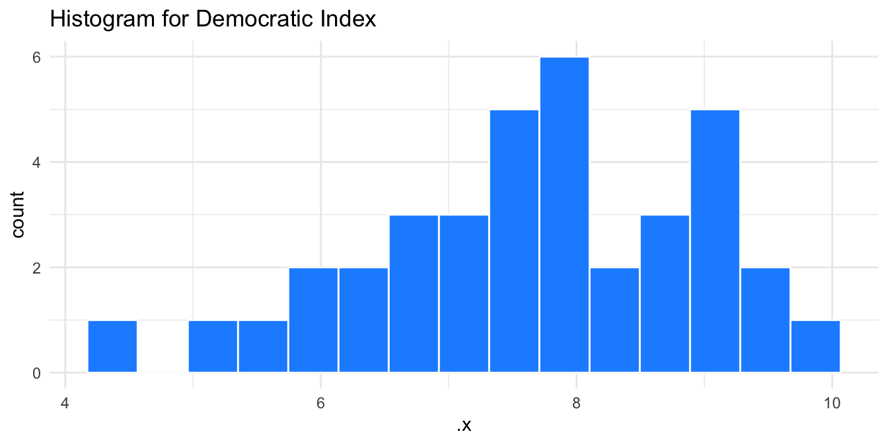
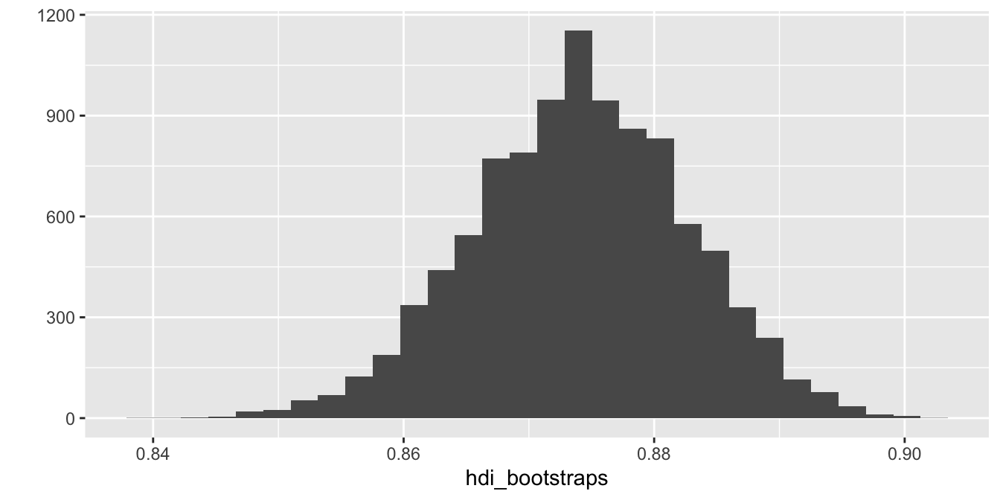

gang <- c("Fred", "Velma", "Daphne", "Shaggy", "Scooby")28 For loops (cykly)
V průběhu analýzy dat se čas od času dostaneme do situace, kdy bude třeba opakovaně vykonávat určitý úkon, ať už se jedná o import velkého množství datasetů, vytvoření grafu pro každou proměnnou v dataframu nebo odhad intervalů spolehlivosti pomocí boostrapingu. U všech těchto úkonů by bylo zdlouhavé a nepraktické aplikovat funkce ručně. Naštěstí pro nás, počítače jsou velmi dobré v opakování.
Nástroj, pomocí kterého docílíme výše zmíněného, se nazývá For loop (For cyklus).
28.1 Kdo je členem gangu?
Základní aplikaci For cyklu si představím na jednoduchém příkladu. Naším cílem bude vyjmenovat jednotlivé členy Scoobyho gangu. Nejdříve si vytvoříme objekt obsahující jména členů:
Bez For cyklů musíme členy vyjmenovat ručně. Využijeme k tomu funkci paste(), pomocí které spojíme jméno člena/ky s větou “is a member!” :
paste(gang[1], "is a member!")[1] "Fred is a member!"paste(gang[2], "is a member!")[1] "Velma is a member!"paste(gang[3], "is a member!")[1] "Daphne is a member!"paste(gang[4], "is a member!")[1] "Shaggy is a member!"paste(gang[5], "is a member!")[1] "Scooby is a member!"Toto řešení je dost nepraktické, protože opakovaně kopírujeme stejný kód. Přitom jediné, co se ve funkcích výše mění, je pořadí člena. Elegantnější alternativou je již zmiňovaný for cyklus. For cyklus lze v R aplikovat (minimálně) dvěma způsoby.
Prvním způsobem je explicitní for loop. Explicitní for loop začíná funkcí for(), následovanou složenými závorkami. Argumenty for() funkce mají speciální podobu, v našem případě bude funkce vypadat následovně: for(name in gang). Tímto říkáme, že chceme aplikovat nějakou funkci na každý element (zde zvaný name) objektu gang. Můžeme si přitom zvolit jakkékoliv označení pro jednotlivé elementy, které chceme. Zde používáme name, ale stejně tak bychom mohli použít například for(i in gang) nebo for(pesky_child in gang). Následují složené závorky, definující, jaké funkce se na každý element mají aplikovat. Celý for loop by našem případě vypadal následovně:
for(name in gang) {
print(paste(name, "is a member!"))
}[1] "Fred is a member!"
[1] "Velma is a member!"
[1] "Daphne is a member!"
[1] "Shaggy is a member!"
[1] "Scooby is a member!"Jak je vidět, nemusíme již kopírovat funkci paste() pětkrát za sebou. For cyklus se o to postará za nás. Výhodou explicitních for loops je, že se aplikují téměř identicky v každém programovacím jazyce. Pokud se tedy seznámíte s for cykly v R, můžete je jednoduše aplikovat i Pythonu nebo Julii.
Nevýhodou explicitních for cyklů, že jsou relativně květnaté - jejich zápis je delší, než je nezbytně nutné. Alternativou jsou funkce z balíčku purrr, který je součástí Tidyverse. Tyto funkce také aplikují různé druhy cyklů, jejich zápis je ale kompaktnější. Hlavní funkcí je zde map(), která má dva argumenty. Prvním argumentem je .x, objekt přes jehož elementy chceme iterovat. Druhým argumentem jsou funkce, které chceme aplikovat:
map(.x = gang, ~paste(.x, "is a member!"))[[1]]
[1] "Fred is a member!"
[[2]]
[1] "Velma is a member!"
[[3]]
[1] "Daphne is a member!"
[[4]]
[1] "Shaggy is a member!"
[[5]]
[1] "Scooby is a member!"Jak je vidět, funkce map() zabírá méně prostoru, než explicitní for loop (a má další výhody, které zmínímě za chvíli). Výsledkem této funkce je objekt typu list. Protože ale víme, že výsledkem naší funkce je věta, můžeme využít funkci map_chr(), jejímž výsledkem je character vektor:
map_chr(.x = gang, ~paste(.x, "is a member!"))[1] "Fred is a member!" "Velma is a member!" "Daphne is a member!"
[4] "Shaggy is a member!" "Scooby is a member!"Obdobně bychom mohli využít funkce map_dbl() pokud je výsledkem desetinné číslo, map_int() pro celé číslo nebo map_lgl() pokud je výsledkem logický vektor.
28.2 Průměr každé numerické proměnné
Vyzkoušejme si nyní o něco praktičtější příklad. Naším cílem bude spočítat průměr každé numerické proměnné v datasetu countries. Začněme tím, že si vyfiltrujeme pouze numerické proměnné.
countries_numeric <- select(countries, where(is.numeric))Nejdříve spočítme průměry proměnných pomocí explicitního for cyklu. Prvním krokem je vytvořením prázdného vektoru, do kterého uložíme výsledky. Toho docílíme pomocí funkce vector(). Tento krok není nezbytně nutný, jedná se ale o dobrou praxi, protože urychlí výpočet. Poté definujeme for loop samotný. Nejdřív musíme získat pořadí jednotlivých proměnných v dataframu, a to pomocí funkce seq_along(). Ta vytvoří vektor čísel od 1 po hodnotu rovnou počtu elementů v objektu, přes iterujeme. Náš dataframe obsahuje devět proměnných, seq_along(countries_numeric) tedy vytvoří řadu celých čísel od 1 do 9. Uvnitř for cyklu spočítáme průměr i-té proměnné a výsledek uložíme jako i-tý element předpřipraveného objektu countries_means:
countries_means <- vector("numeric", length = ncol(countries_numeric))
for (i in seq_along(countries_numeric)) {
countries_means[i] <- mean(countries_numeric[[i]], na.rm = TRUE)
}
countries_means[1] 4.846008e+05 1.675474e+07 1.560186e+05 7.957838e+01 2.914857e-01
[6] 2.403030e-01 1.798788e-01 8.739474e-01 7.639189e+00Výsledkem je devět průměrů pro devět proměnných. Zde začínáme vidět, že explicitní for cykly mohou být poněkud krkolomné. Je třeba předvytvořit vektor pro výsledky a musíme pracovat s pořadím proměnných. Vyzkoušejme si stejný úkol pomocí funkcí funkcí z balíčku purrr.
Narozdíl od explicitního for cyklu není třeba předvytvářet vektor pro výsledky, map() a příbuzné funkce to za nás udělají automaticky. také není třeba řešit pořadí proměnných pomocí seq_along(). Stačí nám tedy aplikovat funkci map_dbl() (protože výsledkem bude desetinné číslo) následovně:
map_dbl(.x = countries_numeric, ~mean(.x, na.rm = TRUE)) gdp population area life_exp uni_prc poverty_risk
4.846008e+05 1.675474e+07 1.560186e+05 7.957838e+01 2.914857e-01 2.403030e-01
material_dep hdi dem_index
1.798788e-01 8.739474e-01 7.639189e+00 Jak vidíme, tato funkce je mnohem kompaktnější a navíc zachovává názvy původních proměnných. Jinak jsou výsledky identické.
28.3 Histogram pro každou numerickou proměnnou
Naším dalším cílem bude vytvoření histogramu pro každou proměnnou datasetu countries_numeric. Graf pro jednu proměnnou můžeme vytvořit tak, jak jsme si ukázali v předchozích kapitolách:
countries_numeric %>%
ggplot(aes(x = hdi)) +
geom_histogram(bins = 15, fill = "dodgerblue", color = "white") +
theme_minimal()Co kdychom chtěli efektivně vytvořit tento graf pro všechny proměnné. S využitím funkce map() je to jednoduché. Jedinou změnou oproti předchozím příkladům bude využití složených závorek, které nám umožní aplikovat více funkcí najednou uvnitř jednoho for cyklu:
countries_histograms <- map(.x = countries_numeric,
~{countries_numeric %>%
ggplot(aes(x = .x)) +
geom_histogram(bins = 15, fill = "dodgerblue", color = "white") +
theme_minimal()
})Kód pro vytvoření grafu je téměř identický, pouze název proměnné jsme nahradili generickým argumentem .x. Výsledkem je list, obsahující devět grafů. Naše grafy ovšem postrádají nadpis, který by identifikoval, kterou proměnnou reprezentují. Naším dalším cílem tedy bude přidání popisků obsahující název proměnné. Pro jeden konkrétní graf bychom graf s popiskem vytvořili následovně:
countries_numeric %>%
ggplot(aes(x = hdi)) +
geom_histogram(bins = 15, fill = "dodgerblue", color = "white") +
theme_minimal() +
labs(title = "Histogram for Human Development Index")Pro vytvoření podobného grafu bude třebat iterovat přes dvě objekty. Prvním objektem je proměnná, pro kterou chceme histogram vytvořit, druhým je vektor názvů, které chceme v grafech použít. K tomu využijeme funkci map2(). Ta funguje velmi podobně, jako nám již známá funkce map(), ale kromě argumentu .x má i druhý .y, čímž nám umožňuje dosadit do cyklu dva různé objekty. Pro vytvoření grafů s popisky pro každou z proměnných nejdříve vytvoříme vektor obsahující názvy všech proměnných a poté aplikujeme funkci map2():
countries_names <- c("Gross Domestic Product",
"Population",
"Area",
"Life Expectancy",
"Proportion of People with University Degree",
"Proportion of People at the risk of Poverty",
"Proportion of Materialy Deprived",
"Human Development Index",
"Democratic Index")
countries_histograms <- map2(.x = countries_numeric,
.y = countries_names,
~{countries_numeric %>%
ggplot(aes(x = .x)) +
geom_histogram(bins = 15, fill = "dodgerblue", color = "white") +
theme_minimal() +
labs(title = paste("Histogram for", .y))})A je to! Graf pro jednotlivé proměnné můžeme zobrazit jejich zavoláním:
countries_histograms$dem_index
Iterace více než dvou objektů
Funkce map2() nám umožňuje iterativně aplikovat funkce na dva objekty najednou. Co kdybychom ale chtěli iterovat přes tři, čtyři nebo více objektů? Právě k tomu slouží funkce pmap(). Funkce pmap() funguje trochu odlišně oproti klasickému map(). Prvním argumentem je list objektů, přes které chceme iterovat. Každému z těchto objektů je přiděleno kódové označení - první objekt dostane označní ..1, druhý ..2, třetí ..3 a tak dále. Druhým argumentem jsou poté funkce, které chceme aplikovat. Pokud bychom chtěli předchozí úkol vyřešit pomocí pmap() místo map2():
countries_histograms <- pmap(list(countries_numeric, #..1
countries_names), #..2
~{countries_numeric %>%
ggplot(aes(x = ..1)) +
geom_histogram(bins = 15,
fill = "dodgerblue",
color = "white") +
theme_minimal() +
labs(title = paste("Histogram for", ..2))})28.4 Boostraping
Posledním příkladem využití for cyklů, který si zde ukážeme, je boostraping. Většina čtenářů pravděpodobně ví, že výzkumníci většinou nemají k dispozici data o celé populaci, kterou studují. Místo toho se musíme spokojit pouze s jejím vzorkem. Žádný vzorek ale svým složením nekopíruje dokonale populaci, ze které byl získaný. Tyto odchylky ve složení vzorku vedou k odchylkám v našich výsledcích. Učebnicovým příkladem jsou předvolební výzkumy - pokud ve vzorku voličů podporuje určitou politickou stranu například 5 procent respondentů, reálná podpora strany v populaci je zpravidla něco mezi 3 a 8 procenty. Tyto odchylky od skutečné hodnoty (takzvaná výběrová chyba) jsou náhodné a velká část statistiky je věnována jejímu vyčíslení. Protože zde nechceme příliš zabíhat do statistické teorie, doporučjeme zájemcům o více informací učebnici Learning Statistics with R od Danielle Navarro. My si zde ukážeme jeden ze způsobů, jak tuto náhodnou výběrovou chybu vyčíslit, a to boostrapping.
Metoda bootstrappingu je založená na vytváření nových vzorků pomocí opakovaného náhodného vytahování pozorování z našich původních dat. Pozorování jsou vytahována s opakováním, jedno pozorování se tedy může do nového vzorku může dostat více než jednou. Tímto způsobem můžeme za určitých podmínek zodpovědět otázku “Jak by se naše výsledky lišily, kdybychom nasbírali trochu odlišná data?”. R nabízí několik balíčku pro aplikaci boostrappingu, jako jsou boot, rsample, coin nebo infer. Jednoduchý boostrapping je ale možné aplikovat pomocí for cyklů.
Boostrapping probíhá ve dvou krocích. V prvním kroku vytvoříme boostrapový vzorek pomocí náhodného výběru s opakováním z původních dat (je přitom nezbytné, aby nový vzorek měl stejný počet pozorování, jako ten původní). Poté spočítáme statistiku, pro kterou chceme vyčíslit náhodnou výběrovou chybu (například průměr). Tyto dva kroky mnohokrát opakujeme, čímž dostaneme vektor statistik, spočítaný na vzorcích s trochu odlišným složením. Tyto hodnoty představují odhad výběrové distribuce výběrové statistiky.
Jako praktický příklad zkusme vyčíslit výběrovou chybu průměru proměnné hdi v datasetu countries. Začněme aplikací funkce map_dbl(). To použijeme, protože víme, že jednotlivé průměry jsou čísla a výsledkem tedy bude numerický vektor. Prvním argumentem není žádný konkrétní objekt, místo toho se jedná o vektor celých čísel od 1 po hodnotu určující počet bootstrapových vzorků, které chceme vytvořit. My budeme chtít vytvořit 10 000 vzorků, prvním argumentem tedy bude 1:10000. Druhým argumentem je výpočet bootstrapové statistiky samotné. K tomu nejdříve využijeme funkce sample(), pomocí které vytvoříme boostrapový vzorek. Dáme si přitom pozor nato, abychom nastavili argument replace = TRUE, čímž zajistíme, že výběr probíhá s opakováním (jinak bychom skončili pokaždé se stejným vzorkem). Poté už jen stačí spočítat požadovanou statistiku, v našem případě průměr. Celá funkce funkce provádí následjící - pro každý krok od prvního po desetitisící vytvoř nový bootstrapový vzorek a spočítej jeho průměr. Výsledek uložíme do objektu hdi_bootstraps:
hdi_bootstraps <- map_dbl(1:10000,
~{
sample <- sample(countries$hdi, replace = TRUE)
mean(sample)
})Výsledný vektor 10 000 průměrů představuje odhad výběrové distribuce průměrů proměnné hdi. Můžeme jí graficky zobrazit:
qplot(hdi_bootstraps)
Můžeme spočítat standardní odchylku výběrových průměrů (tedy standardní chybu):
sd(hdi_bootstraps)[1] 0.008608599A nakonec můžeme spočítat 95% intervalový odhad průměru hdi:
quantile(hdi_bootstraps, probs = c(0.025, 0.975)) 2.5% 97.5%
0.8568421 0.8902632 A je to! Boostrapping představuje jednoduchý způsob vyčíslení náhodné výběrové chyby, a to zejména pokud pracujeme s většími vzorky s jednoduchou strukturou. Čtenáři by ovšem měli mít na paměti dvě věci. Zaprvé, bootstrapované hodnoty představují pouze odhad výběrové distribuce - čím více simulací, tím přesnější odhad bude. Zadruhé, boostrapping je stejně jako všechny ostatní statistické nástroje založený na sadě předpokladů, které zaručují jeho správnou funkci. Pokud je některý z těchto předpokladů výrazně porušený, naše výsledky se stanou velmi nepřesnými. Čtenáři by si měli důkladně nastudovat potřebnou teorii, než aplikují bootstrapping v praxi.
R rozumí vědecké notaci
Protože R rozpoznává vědeckou notaci, je možné nahradit 10000 výrazem 1e4. Výsledná funkce tedy může vypadat následovně:
hdi_bootstraps <- map_dbl(1:1e4,
~{
sample <- sample(countries$hdi, replace = TRUE)
mean(sample)
})